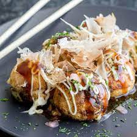

Takoyaki

Description
Takoyaki is a ball-shaped Japanese snack made of a wheat flour-based batter and cooked in a special molded pan. It is typically filled with minced or diced octopus, tempura scraps, pickled ginger, and green onion.
Ingredients
- 1/4 cup katsuobushi
- 2 green onions/scallions
- 1 tbsp pickled red ginger
- 4.2 oz octopus sashimi
- 2 tbsp neutral-flavored oil
- 1/3 cup tempura scraps
Takoyaki Batter
- 1 cup all-purpose flour
- 2 tsp baking powder
- 1/2 tsp kosher salt
- 2 large eggs
- 1 tsp soy sauce
- 1 1/2 cups dashi
Toppings
- 1/2 cup takoyaki sauce
- Japanese mayonnaise
- katsuobushi
- aonori
- pickled red ginger
Steps
- Gather ingredients
-
To Prepare the Filling
- Grind the katsuobushi into a fine powder
- Cut the green onions into fine slices and mince the red pickled ginger
- Cut the octopus into 1/2 inch bite-sized pieces
-
To Make the Takoyaki Batter
- In a large bowl, combine the flour, baking powder, and kosher salt and whisk it all together.
- Add the eggs, soy sauce, and dashi.
- Whisk it all together until well blended and transfer the batter to a measuring cup with a handle.
-
To Cook the Takoyaki
- Heat the takoyaki pan to over medium heat.
- Using a brush, generously oil the pan's rounded chambers and flat surface on the top.
- Once smoke is rising from the pan, pour the batter to fill the chambers.
- Add 1-3 octopus pieces and sprinkle on top the katsuobushi powder
- Sprinkle the tenkasu, green onion, and pickled red ginger on top.
- After 3 minutes or so rotate each piece 90 degrees toward the bottom of the pan.
- After 4 minutes or so rotate it back.
- Swap the balls around so they brown evenly for the next 4 minutes.
- To serve: put on plate and drizzle takoyaki sauce or Japanese mayo on top.
- Best served immediately but be careful as they are very hot inside!